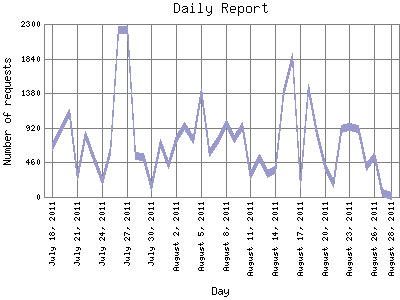

Analog 5.24
Analog 5.24 Report Magic for Analog 2.13
Report Magic for Analog 2.13The Daily Report identifies the activity for each day within the reporting period. Remember that one page hit can result in several server requests as the images for each page are loaded.

| Day | Number of requests | Percentage of the requests | |
|---|---|---|---|
| 1. | August 28, 2011 | 16 | 0% |
| 2. | August 27, 2011 | 55 | 0.1% |
| 3. | August 26, 2011 | 550 | 0.10% |
| 4. | August 25, 2011 | 403 | 0.8% |
| 5. | August 24, 2011 | 899 | 0.17% |
| 6. | August 23, 2011 | 934 | 0.17% |
| 7. | August 22, 2011 | 898 | 0.17% |
| 8. | August 21, 2011 | 175 | 0.3% |
| 9. | August 20, 2011 | 380 | 0.7% |
| 10. | August 19, 2011 | 873 | 0.16% |
| 11. | August 18, 2011 | 1,447 | 0.26% |
| 12. | August 17, 2011 | 177 | 0.3% |
| 13. | August 16, 2011 | 1,856 | 0.33% |
| 14. | August 15, 2011 | 1,368 | 0.24% |
| 15. | August 14, 2011 | 359 | 0.7% |
| 16. | August 13, 2011 | 304 | 0.6% |
| 17. | August 12, 2011 | 513 | 0.10% |
| 18. | August 11, 2011 | 274 | 0.4% |
| 19. | August 10, 2011 | 945 | 0.17% |
| 20. | August 9, 2011 | 775 | 0.13% |
| 21. | August 8, 2011 | 972 | 0.18% |
| 22. | August 7, 2011 | 743 | 0.13% |
| 23. | August 6, 2011 | 583 | 0.10% |
| 24. | August 5, 2011 | 1,402 | 0.26% |
| 25. | August 4, 2011 | 763 | 0.13% |
| 26. | August 3, 2011 | 941 | 0.17% |
| 27. | August 2, 2011 | 765 | 0.13% |
| 28. | August 1, 2011 | 428 | 0.8% |
| 29. | July 31, 2011 | 721 | 0.12% |
| 30. | July 30, 2011 | 127 | 0.2% |
| 31. | July 29, 2011 | 527 | 0.10% |
| 32. | July 28, 2011 | 548 | 0.10% |
| 33. | July 27, 2011 | 2,223 | 0.40% |
| 34. | July 26, 2011 | 2,221 | 0.40% |
| 35. | July 25, 2011 | 616 | 0.11% |
| 36. | July 24, 2011 | 219 | 0.3% |
| 37. | July 23, 2011 | 498 | 0.9% |
| 38. | July 22, 2011 | 823 | 0.14% |
| 39. | July 21, 2011 | 262 | 0.4% |
| 40. | July 20, 2011 | 1,117 | 0.20% |
| 41. | July 19, 2011 | 923 | 0.17% |
| 42. | July 18, 2011 | 661 | 0.11% |
Most active day February 10, 2009 : 11,238 requests handled.
Daily average: 744 requests handled.
This report was generated on August 28, 2011 02:33.
Report time frame August 1, 2008 06:00 to August 28, 2011 04:03.
| Web statistics report produced by: | |
| Analog 5.24 | Report Magic for Analog 2.13 |